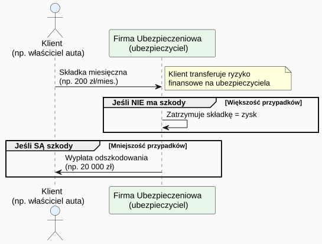
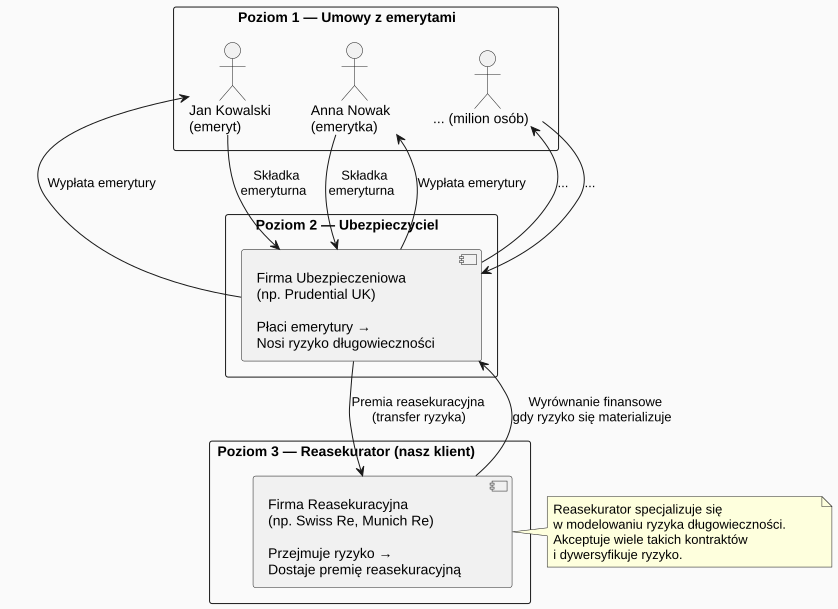
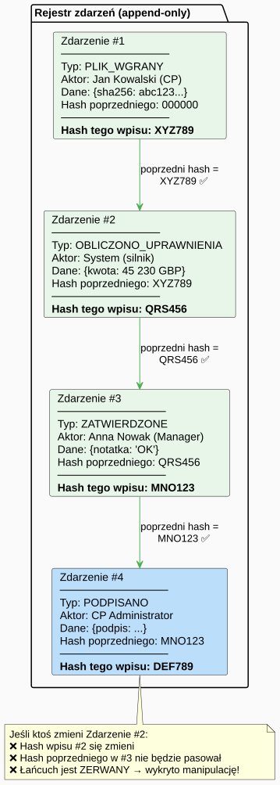
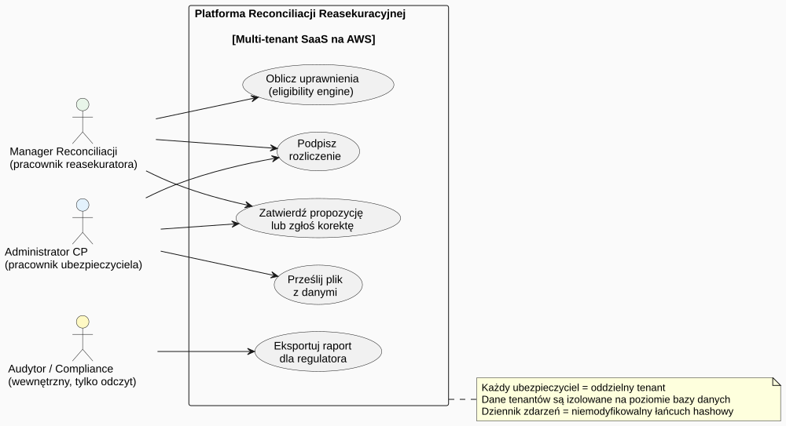
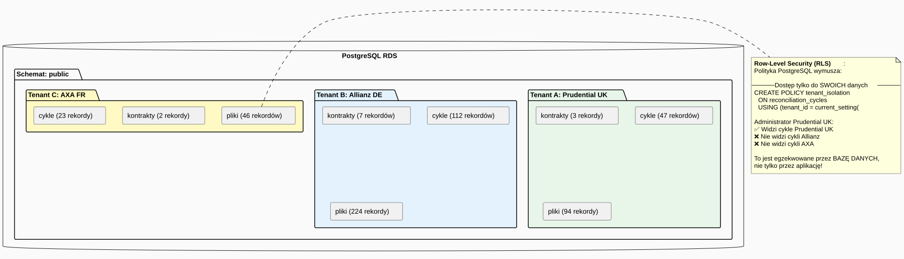
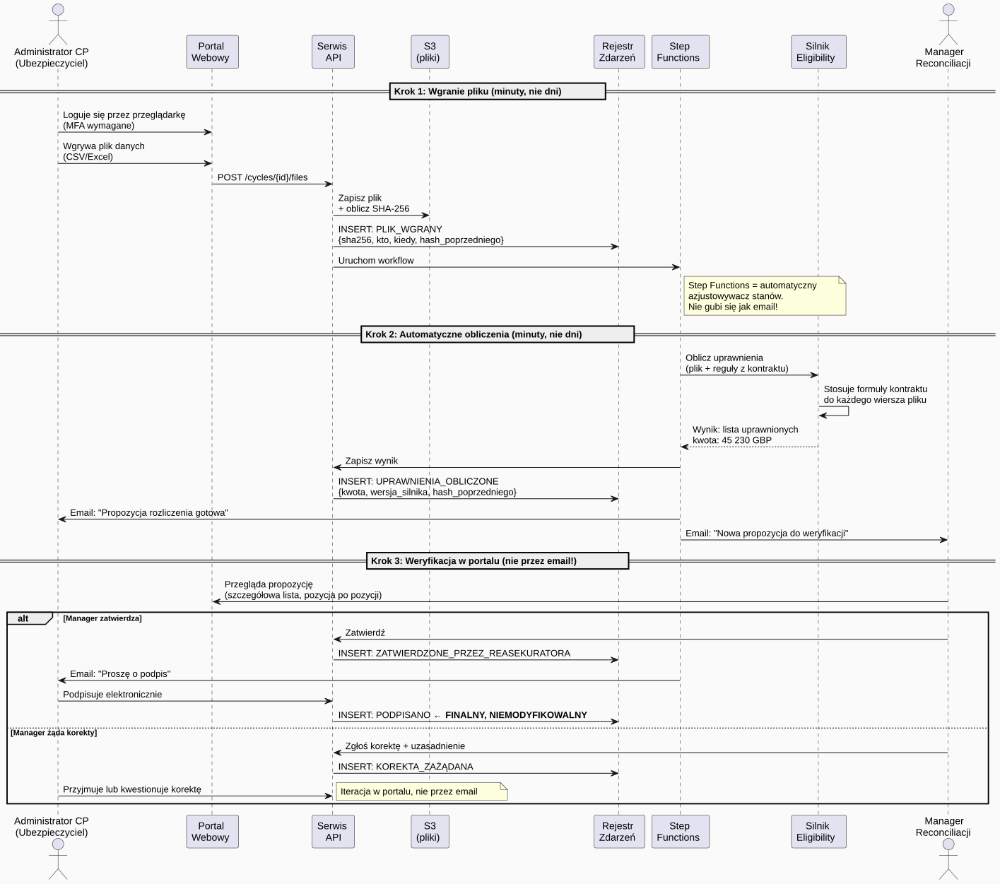
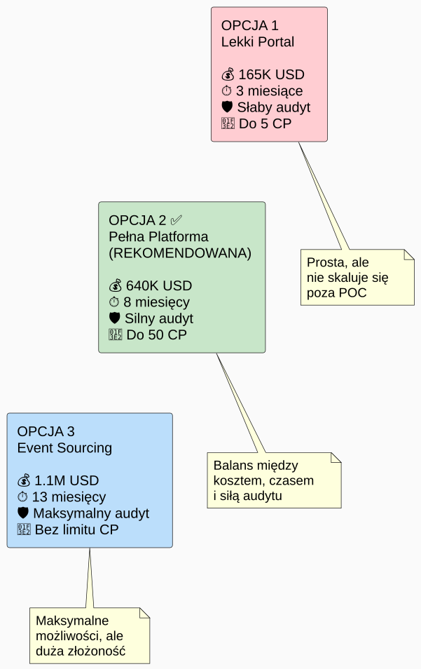
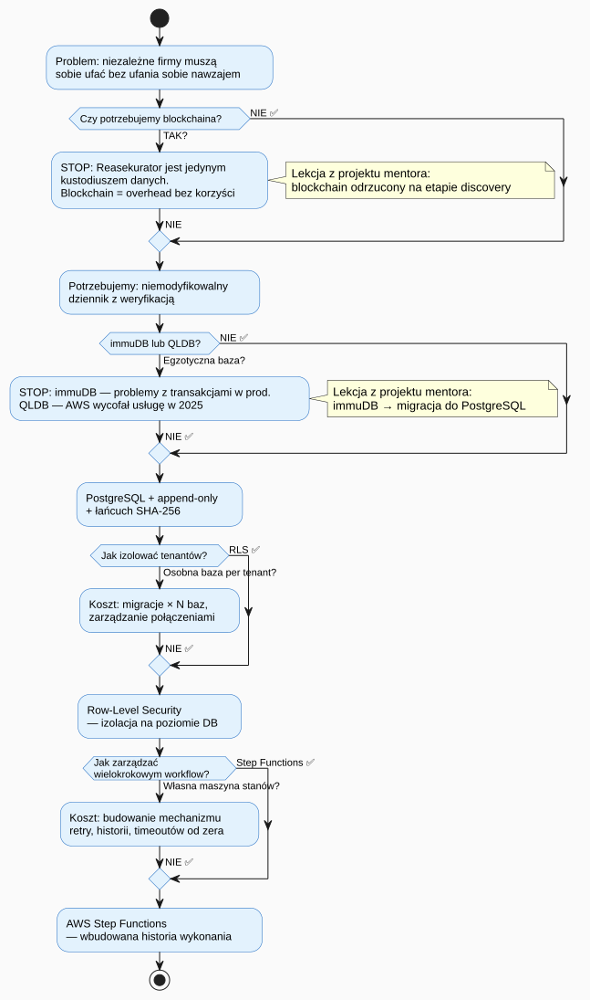

1. Ubezpieczenie — punkt wyjścia
Zanim zrozumiemy reasekurację, musimy zrozumieć ubezpieczenie.
1.1. Czym jest ubezpieczenie?
Ubezpieczenie to umowa, w której ubezpieczyciel (firma ubezpieczeniowa) zgadza się pokryć określone koszty klienta w zamian za regularne płatności zwane składką.
Przykład z życia:
Płacisz 200 zł miesięcznie za ubezpieczenie samochodu. Jeśli masz wypadek → firma płaci naprawę (np. 20 000 zł). Jeśli nie masz wypadku → firma zatrzymuje składkę jako zysk.
Firma ubezpieczeniowa zarabia dlatego, że większość klientów nie składa roszczeń. Ryzyko jest rozłożone na miliony osób — tylko nieliczni mają wypadki.
1.2. Ryzyko jako towar
W ubezpieczeniach ryzyko jest towarem. Firma kupuje ryzyko od klienta (bierze na siebie potencjalną stratę) w zamian za składkę. To fundamentalna zasada całej branży.

1.3. Rodzaje ryzyk ubezpieczeniowych
| Typ ryzyka | Przykład | Kto ubezpiecza |
|---|---|---|
Majątkowe |
Samochód, dom, firma |
Allianz, PZU, Warta |
Zdrowotne |
Choroba, wypadek, operacja |
Medicover, LUX MED |
Życiowe |
Śmierć ubezpieczonego |
Unum, MetLife |
Emeryturne / długowieczności |
Osoba żyje dłużej niż zakładano |
Reasekuratorzy (nasz przypadek!) |
2. Reasekuracja — ubezpieczenie ubezpieczycieli
2.1. Problem ubezpieczyciela
Wyobraź sobie, że jesteś firmą ubezpieczeniową. Ubezpieczasz milion emerytów — płacisz im co miesiąc emeryturę (tzw. rentę dożywotnią).
Problem: Co jeśli emeryci żyją znacznie dłużej, niż zakładały Twoje aktuarialne modele?
Założenie: statystyczny emeryt żyje 15 lat po przejściu na emeryturę. Rzeczywistość: żyje 25 lat → płacisz 10 lat dłużej. Dla miliona emerytów: potencjalna strata MILIARDÓW złotych.
To jest właśnie ryzyko długowieczności (longevity risk) — ryzyko, że ubezpieczeni żyją dłużej niż przewidywano. Dla firmy ubezpieczeniowej to ryzyko jest ogromne i trudne do dywersyfikacji.
2.2. Rozwiązanie: reasekuracja
Firma ubezpieczeniowa może sprzedać część tego ryzyka reasekuratorowi. Działa to analogicznie do ubezpieczenia — tylko że klientem jest inna firma, nie osoba prywatna.

2.3. Dlaczego ubezpieczyciel oddaje ryzyko?
Bo reasekurator jest lepszy w zarządzaniu tym konkretnym ryzykiem:
-
Reasekurator ma portfel wielu ubezpieczycieli z różnych krajów → ryzyko jest zdywersyfikowane
-
Reasekurator zatrudnia wyspecjalizowanych aktuariuszy modelujących długowieczność
-
Ubezpieczyciel może uwolnić kapitał regulacyjny (wymogi Solvency II) po transferze ryzyka
-
Ubezpieczyciel ogranicza katastroficzne straty przy nieoczekiwanej długowieczności populacji
3. Kontrakt reasekuracyjny — jak to działa w praktyce
3.1. Anatomia kontraktu
Kontrakt reasekuracyjny to formalna umowa między ubezpieczycielem (cedent) a reasekuratorem. Zawiera:
| Element kontraktu | Opis |
|---|---|
Portfolio polis |
Lista konkretnych polis emerytalnych objętych kontraktem (np. 50 000 polis Prudential UK) |
Formuły kompensacji |
Algorytm obliczający ile reasekurator płaci za każdą osobę w zależności od jej statusu i wieku |
Próg trigger |
Warunki aktywujące wypłatę (np. śmiertelność >X% odchylenia od modelu) |
Warunki finansowe |
Premia reasekuracyjna, limity odpowiedzialności, franszyz |
Daty rozliczeń |
Zazwyczaj miesięczne; kiedy przesyłane są dane i kiedy następują płatności |
Warunki specjalne |
Wyjątki, wyłączenia, klauzule dostosowujące |
4. Problem zaufania — serce architektury
4.1. Dlaczego zaufanie jest problemem?
To nie jest kwestia złej woli. Chodzi o strukturalny konflikt interesów:
Reasekurator → chce płacić mniej (kwestionuje każdą wątpliwą pozycję) Ubezpieczyciel → chce dostać więcej (prezentuje dane możliwie korzystnie) Obaj są NIEZALEŻNYMI podmiotami z różnych krajów. Nie mają wspólnego systemu, wspólnej bazy danych, ani wzajemnego zaufania.
Dziś zaufanie jest budowane przez ludzką weryfikację:
-
Człowiek sprawdza plik człowieka
-
Email potwierdza email
-
Podpis potwierdza podpis
Jeśli pojawi się spór → sąd arbitrażowy, który patrzy na… emaile i Excele.
4.2. Co musi zapewnić platforma?
Platforma musi cyfrowo zastąpić tę ludzką warstwę zaufania. Oznacza to:
| Pytanie o zaufanie | Odpowiedź manualna (dziś) | Odpowiedź platformy (cel) |
|---|---|---|
Czy plik danych nie był modyfikowany po wysłaniu? |
Porównanie sumy kontrolnej emaila… albo po prostu wiara |
SHA-256 checksum weryfikowany automatycznie przy odbiorze |
Czy obliczenia są zgodne z kontraktem? |
Człowiek sprawdza formuły Excela |
Silnik eligibility stosuje zakodowane reguły kontraktu |
Czy obie strony naprawdę się zgodziły? |
Email z "OK" lub podpisany PDF |
Cyfrowy podpis obu stron w niemodyfikowalnym rejestrze |
Czy historia rozliczeń jest niezmieniona? |
Folder z mailami (łatwy do modyfikacji) |
Łańcuch hashowy (kryptograficznie weryfikowalny) |
Kto co zrobił i kiedy? |
Nagłówki emaili (łatwe do podrobienia) |
Niemodyfikowalny dziennik zdarzeń z timestampem |
4.3. Co to jest łańcuch hashowy?
To kluczowy mechanizm zaufania w architekturze. Wyobraź sobie łańcuch, gdzie każde ogniwo zawiera odcisk palca poprzedniego ogniwa:

Jeśli ktokolwiek (nawet administrator bazy danych) zmodyfikuje jakikolwiek historyczny wpis, łańcuch hashowy natychmiast to ujawni. Nie potrzeba blockchaina — wystarczy PostgreSQL z odpowiednimi uprawnieniami.
5. Architektura platformy — krok po kroku
Teraz, gdy rozumiemy domenę, przeanalizujmy jak platforma rozwiązuje te problemy.
5.1. Ogólny widok systemu

5.3. Jak działa tenant isolation?
To jeden z najtrudniejszych problemów — musisz upewnić się, że ubezpieczyciel A nigdy nie zobaczy danych ubezpieczyciela B, nawet jeśli obaj używają tej samej bazy danych.

5.4. Jak wygląda nowy cykl rozliczeń na platformie?

5.5. Porównanie: przed i po
| Aspekt | Przed (Excel + email) | Po (Platforma) |
|---|---|---|
Czas cyklu |
2–4 tygodnie |
2–5 dni |
Ślad audytowy |
Skrzynka emailowa (łatwa do manipulacji) |
Kryptograficzny łańcuch hashowy |
Obliczenia |
Ręczne formuły Excel (ryzyko błędu) |
Automatyczny silnik eligibility (deterministyczny) |
Spory |
Email → kontrnegocjacje → arbitraż |
Ustrukturyzowany workflow z historią zmian |
Onboarding nowego CP |
Tygodnie konfiguracji ręcznej |
Formularz + test cycle + UAT |
Compliance (Solvency II) |
Rekonstrukcja z emaili (żmudna) |
Automatyczny eksport z rejestru |
Skalowalność |
+1 ubezpieczyciel = +5 pracowników |
+1 ubezpieczyciel = konfiguracja w portalu |
6. Trzy warianty architektoniczne
W solution design zaproponowano trzy opcje. Oto ich istota w prostym języku:
6.1. Opcja 1: Lekki Portal (~165 000 USD, 3 miesiące)
Prosta aplikacja webowa + PostgreSQL. Zatwierdzenia nadal wymagają emaili. Dziennik zdarzeń oparty na triggerach (może być wyłączony przez administratora bazy).
Kiedy wybrać: Tylko jako proof-of-concept dla 1–3 ubezpieczycieli.
6.2. Opcja 2: Pełna Platforma ✅ (~640 000 USD, 8 miesięcy) — Rekomendowana
Pełny workflow ze Step Functions, kryptograficzny łańcuch hashowy, Row-Level Security, wielodostępny portal. Pokrywa cały obecny portfel ubezpieczycieli (5–50 firm).
Kiedy wybrać: To jest właściwe rozwiązanie na teraz i na najbliższe lata.
6.3. Opcja 3: Event Sourcing (~1 100 000 USD, 13 miesięcy)
Każda zmiana stanu to niemodyfikowalne zdarzenie w sklepie zdarzeń. Maksymalna siła audytowa, możliwość odtworzenia dowolnego historycznego stanu. Znacznie wyższa złożoność implementacji.
Kiedy wybrać: Gdy portfel urośnie powyżej 50 firm lub regulator zażąda pełnego odtworzenia historii zdarzeń.

7. Kluczowe pojęcia techniczne — słownik
7.1. SHA-256 (skrót kryptograficzny)
Funkcja matematyczna, która dla dowolnych danych tworzy unikalny "odcisk palca" (64 znaki hex). Zmiana choćby jednego bajtu wejściowego całkowicie zmienia wynik.
SHA-256("Jan Kowalski, status: żyje") = a7f3c9...
SHA-256("Jan Kowalski, status: umarł") = b8e2d1... ← zupełnie inny!
7.2. Row-Level Security (RLS)
Mechanizm PostgreSQL, który pozwala zapisać w bazie danych reguły dostępu: "Użytkownik z tenant_id = X widzi tylko wiersze z tenant_id = X". Egzekwowanie następuje na poziomie bazy, nie aplikacji — nawet jeśli aplikacja ma błąd, baza nie wyda danych innego tenanta.
7.3. AWS Step Functions
Usługa AWS do budowania przepływów pracy. Zamiast polegać na emailach do koordynacji między ludźmi, Step Functions utrzymuje stan maszyny stanów (czeka → zatwierdzone → podpisane). Ma wbudowaną historię każdego wykonania — to dodatkowy dziennik audytowy.
7.4. Multi-tenancy (wielodostępność)
Architektura, w której wiele niezależnych organizacji (tenantów) dzieli tę samą infrastrukturę platformy, ale ich dane są całkowicie od siebie izolowane. W naszym przypadku: każdy ubezpieczyciel to oddzielny tenant.
7.5. Eligibility Engine (silnik uprawnień)
Serwis, który odczytuje reguły kontraktu i plik danych, a następnie algorytmicznie oblicza, które osoby są "uprawnione" (eligible) do objęcia kompensacją reasekuracyjną. Zastępuje ręczne formuły Excelowe deterministycznym kodem.
7.6. Solvency II
Europejska dyrektywa regulacyjna dla firm ubezpieczeniowych i reasekuracyjnych. Wymaga m.in. przechowywania szczegółowych, audytowalnych rejestrów wszystkich transakcji transferu ryzyka przez co najmniej 10 lat. To jeden z głównych powodów, dla których niemodyfikowalny dziennik zdarzeń jest wymaganiem, a nie dodatkiem.
8. Podsumowanie — dlaczego ta architektura?

Kluczowa filozofia całej architektury pochodzi wprost z mentorskiego projektu:
"Simpler is often better. Your job as an architect is to prevent over-complication." — Nikita Sosnov, mentor projektu
Blockchain wydawał się oczywisty → okazał się zbędny. immuDB wydawał się elegancki → okazał się ryzykowny. PostgreSQL z łańcuchem hashowym jest nudny → i dlatego jest właściwy.
Dokument edukacyjny przygotowany na potrzeby projektu mentorskiego — Case Study 03. Autor: Solution Architect | Data: 2026-04-14